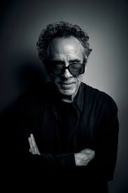
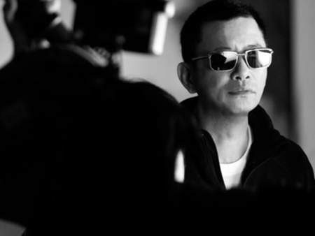

Tim Burton va néixer l’any 1958 a Burbank, Califòrnia. Des de petit mostrava interès pel dibuix, el cinema i les històries fosques i fantàstiques. Va estudiar animació a l’California Institute of the Arts i, després, va començar a treballar com a animador a Disney. Tot i això, el seu estil peculiar i fosc encaixava poc amb l’estètica clàssica de l’estudi. Va començar a destacar amb curtmetratges com Vincent i Frankenweenie, fins que es va convertir en un director molt reconegut gràcies a pel·lícules com Beetlejuice, Edward Scissorhands o Charlie and the Chocolate Factory. El seu cinema es caracteritza per personatges excèntrics, atmosferes gòtiques i una barreja entre fantasia i melancolia. Amb els anys, Burton s’ha convertit en una figura clau del cinema fantàstic contemporani.
Wong Kar-wai va néixer el 1958 a Xangai, Xina, però es va traslladar de petit a Hong Kong amb la seva família. Durant la seva infància va viure força aïllat per les dificultats amb la llengua, i això va influir en la seva sensibilitat artística i en la manera íntima de retratar les emocions. Va començar treballant com a guionista de televisió abans de dirigir la seva primera pel·lícula, As Tears Go By. Amb el temps es va convertir en una figura essencial del cinema asiàtic gràcies a obres com Chungking Express, In the Mood for Love i 2046. El seu cinema destaca per l’ús poètic de la llum i el color, les càmeres lentes, la música melancòlica i les històries sobre l’amor, la nostàlgia i la solitud. Wong Kar-wai és reconegut mundialment per haver convertit les emocions i l’atmosfera en l’element central de les seves pel·lícules.